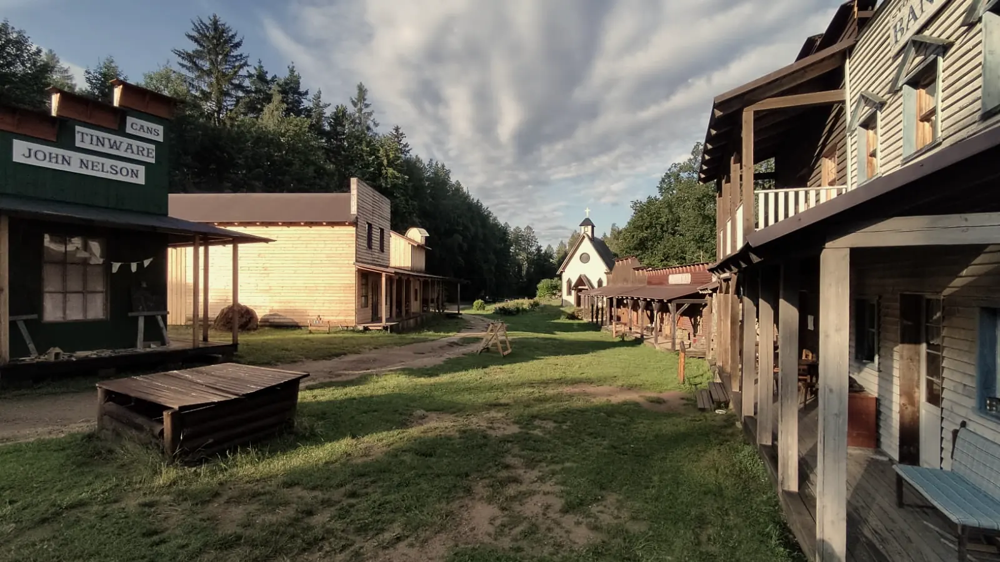
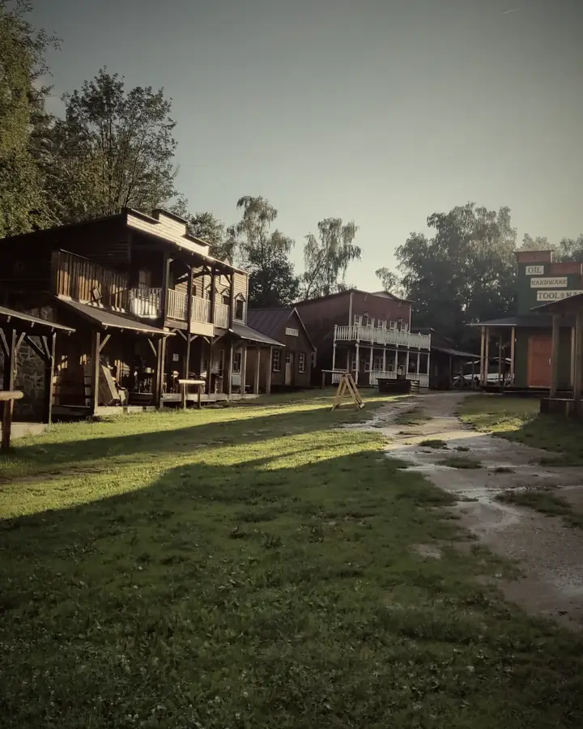
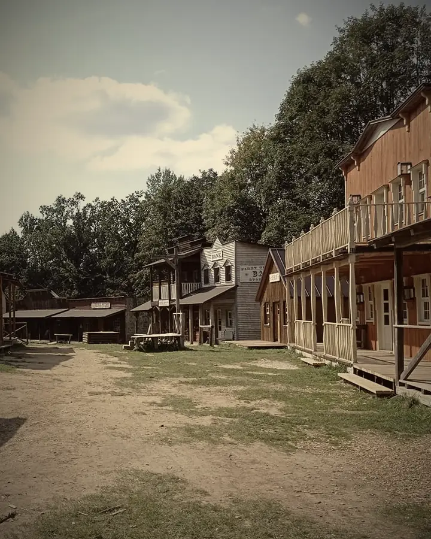
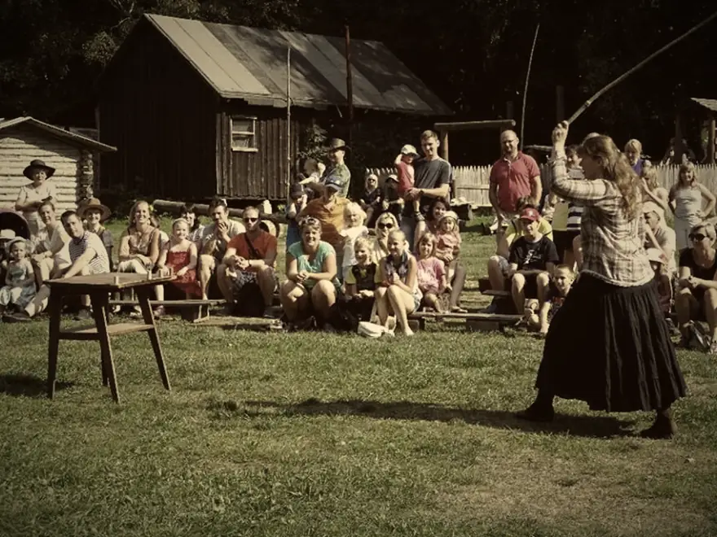
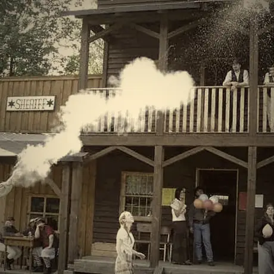
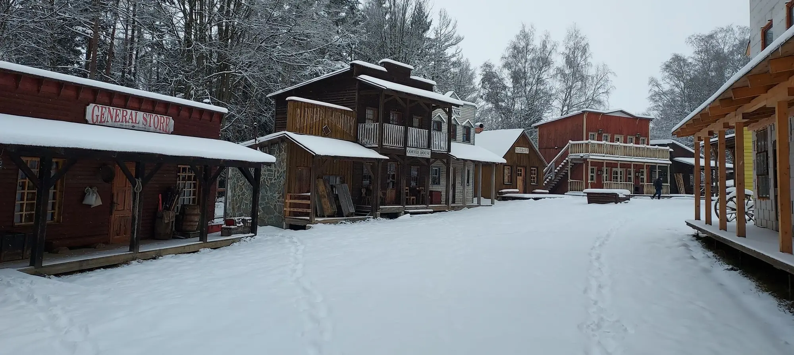

Luk
Střelba z luku na terč.

Westernové městečko
V lese na Vysočině od roku 1996
Městečko Divokého západu u Kamenice u Humpolce. Žádný dům tu není jen kulisa: banka, úřad šerifa, kavárna, kasino, obchod i kostel se zvonem opravdu fungují.
V roce 2026 je městečko pro veřejnost dočasně zavřené.
100 Kčza osobu
Vstupné platí i pro hosty, kteří jdou jen do kavárny.
Osm disciplín Divokého západu. U každé je někdo, kdo poradí nebo předvede, jak na to.
Střelba z luku na terč.
Hod tomahawkem a nožem do špalku.
Házení lasem a práskání bičem.
Hod podkovou na cíl.
Rýžovací pánev, voda a trpělivost.
Dobové zbraně a střelba na plechovky.
Kožený váček, přívěsek, provaz, ruční papír nebo dřevořezba.
Muzeum osidlování Divokého západu.
Na verandě kavárny mezitím voní káva a domácí jablečný štrúdl.
Stonetown začal jako parta kamarádů, která pořádala letní tábory v lese u Humpolce. Postupně přibývaly stavby, až z nich bylo celé městečko. Funguje od roku 1996 a pořád roste.
Na Mainstreet dnes stojí banka, úřad šerifa, kavárna, kasino, obchod a kostel se zvonem. Je tu i kožedělná dílna a truhlářský koutek.
Podle reportáže Českého rozhlasu z 25. 9. 2021.
„Poblíž je vesnička Kamenice, a tak se to u nás mělo jmenovat Stonevillage, ale my jsme chtěli být město.“

Slovo starosty
„Není tu jediný barák, který by byl jenom kulisou. Jsou to všechno plnohodnotné funkční objekty.“

Asi 3 hodiny ve městečku, zhruba 150–250 Kč za dítě podle velikosti skupiny. Doprovod neplatí, děti dostanou pracovní listy, stravování po domluvě. Rezervace je nutná.
V roce 2026 třicátý ročník: „Čarodějův učeň“, 5.–18. 7. 2026, pro děti od 7 do 15 let. V zimě se tu táboří a soutěží Lovci kožešin.
Městečko slouží jako kulisa pro LARP i pro filmaře: westerny, historické filmy, reklamy a hudební klipy.
Kniha hostů
Zapište se. Odpovíme e-mailem a termín potvrdíme. Poptávka je nezávazná.
Westernové městečko Stonetown uvádí
Sezónu 2027 doplníme, jakmile bude vyhlášená.



Po D1 na exit 90 u Humpolce, dál podle cedulí na parkoviště. Parkování je zdarma.
Zastávka Kamenice u Humpolce na trati Havlíčkův Brod – Humpolec, odtud po modré turistické značce.
Kamenice 103, 582 55 Herálec